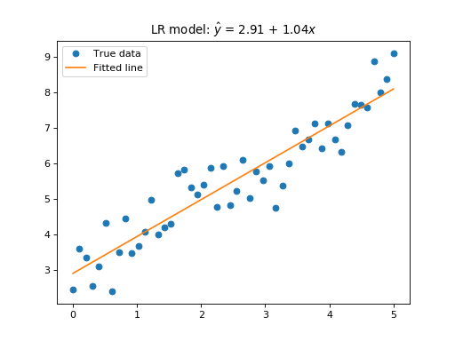

3. 线性回归¶
本章介绍线性回归的内容．
线性回归（Linear regression） 是最基础的机器学习模型．在机器学习中，一个含有 个自变量的线性回归的真实模型可以用下式描述：
其中，模型左侧的  表示待预测的标签，各 表示特征 的权重，而
表示待预测的标签，各 表示特征 的权重，而  表示截距，最后误差项 服从标准差为 0 的某个正态分布： ．
表示截距，最后误差项 服从标准差为 0 的某个正态分布： ．
拟合值记作  ，即我们通过回归得到的模型是：
，即我们通过回归得到的模型是：
3.1. 简单线性回归¶
只有一个自变量  的线性回归模型，我们称为 简单线性回归（Simple linear regression） 。
的线性回归模型，我们称为 简单线性回归（Simple linear regression） 。
线性回归实质是一种简单的最优化求解，即求得线性系数 与截距 的估计，使得估计模型与数据集的差别最小。在一般情况下，这个“差别”是通过二次垂直距离定义的，也就是我们通称的最小二乘：
其中， 是样本数据集的大小。从数学上由偏导数容易证明，函数 总是在以下取值时达到最小值：
是样本数据集的大小。从数学上由偏导数容易证明，函数 总是在以下取值时达到最小值：
其中， 与 分别是样本均值。
由此我们得到了线性回归模型，并可以通过该模型求得 拟合值（Fitted values） ：
我们利用 Python 生成一个数据集，并实现一个简单线性回归：
import numpy as np
from sklearn import linear_model
from matplotlib import pyplot as plt
# Generating Dataset
b0, b1 = 3, 1
n = 50
x = np.linspace(0, 5, n).reshape(-1, 1) # 1 column data
np.random.seed(123)
epsilon = np.random.normal(0, .5, n).reshape(-1, 1)
y = b0 + b1 * x + epsilon
# Regression
regr = linear_model.LinearRegression()
regr.fit(x, y)
yhat = regr.predict(x)
# Plotting
plt.plot(x, y, 'o', label='True data')
plt.plot(x, yhat, label='Fitted line')
plt.legend()
plt.title('LR model: $\hat{{y}}$ = {:.2f} + {:.2f}$x$'.format(regr.intercept_[0], regr.coef_[0][0]))
plt.show()
下图展示了该简单线性回归的结果：
(Source code, png, hires.png, pdf)
{kind=link}
{kind=link}
